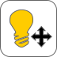

×
* Hover cursor over toolbar icons and buttons to see functions.
* Left-click and drag on model to rotate.
* Hold right button or hold scroll wheel and drag to move/pan.
* Models: Toggle transparency and/or color.
 Return to home position and lighting.
Return to home position and lighting.
 Zoom in/Zoom out (also scroll wheel).
Zoom in/Zoom out (also scroll wheel).
 Light control: click on and drag mouse across model to adjust lighting.
Pick point mode: left-click on model to pick landmarks. Points will copy to the "Log Points" box.
 Measure tool: left-click 2 points on the model to get a distance. Distance will copy to the "Log Distances" box.
Measure tool: left-click 2 points on the model to get a distance. Distance will copy to the "Log Distances" box.
Clipping tool: select x-, y-, or z-planes to clip skull. Use slider to adjust plane position.
Preset views:
Anterior
 Left profile
Right profile
Inferior
Superior
Left profile
Right profile
Inferior
Superior
 Save screenshot.
Save screenshot.